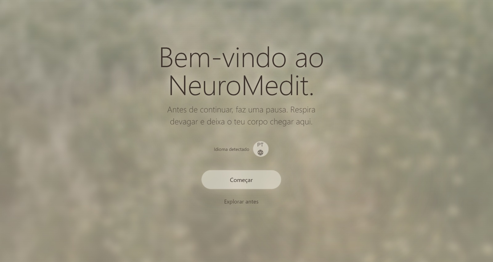

NeuroMedit
Designing a low cognitive-load meditation experience.
Most meditation apps ask you to relax — and overload you with choices before you get there. This is the process behind an app that treats the moment before meditation as part of the meditation itself.
Starting with the wrong question
Meditation apps are usually judged by their content library — how many sessions, how many voices, how many themes. I started there too, and it was the wrong place to start.
The real friction wasn't the content. It was everything a stressed person has to do before reaching it: open the app, read a menu, compare categories, make a decision. For someone who opened the app because they were already overwhelmed, that sequence is a second source of overwhelm.
So I reframed the problem. Instead of asking "what content should this app have," I asked "what does someone in a dysregulated state need from an interface in the first ten seconds." That question shaped everything that followed.
Calm is a structural problem, not a visual one
Soft colors and slow animations can suggest calm, but they don't produce it if the person still has to think, choose, and navigate before their first breath. Visual calm and cognitive calm are different things, and most meditation products only design for the first one.
Calm isn't a color palette. It's the absence of unnecessary decisions.
That insight became the design thesis for NeuroMedit: reduce the number of decisions between "I opened the app" and "I am breathing," and treat every screen in between as a transition, not a destination.
This meant looking past aesthetics and mapping the emotional and cognitive state of the person on the other side of the screen — before designing a single component.
Who is actually opening this app
Four recurring states kept surfacing in research — each with a different emotional entry point, a different cognitive pain point, and a different opportunity for the interface to help rather than add friction.
Overwhelmed
Emotional state
Anxious, scattered, mentally "loud."
Cognitive pain point
Any menu feels like one more demand.
UX opportunity
Remove choice entirely at entry — offer one obvious next step.
Depleted
Emotional state
Tired, low energy, little patience.
Cognitive pain point
Reading and comparing options costs effort they don't have.
UX opportunity
Short, low-effort interactions with generous whitespace.
Skeptical
Emotional state
Curious but guarded, unsure it will help.
Cognitive pain point
Overly clinical or overly mystical language breaks trust.
UX opportunity
Plain, grounded language and visible transparency about the method.
Returning
Emotional state
Familiar with the app, seeking routine.
Cognitive pain point
Friction in getting back to what worked before.
UX opportunity
Fast re-entry to recent or favorite sessions.
Looking at Calm and Headspace with a critical eye
Both are well-crafted products with strong visual systems. The gap I found wasn't in polish — it was in what happens before the first breath.
Calm
A rich, editorial home screen with multiple content rails. Beautiful, but it asks for a decision before any practice begins — the entry point is a library, not a breath.
Headspace
Friendlier and more guided than Calm, with onboarding that nudges toward a first session. Still, the main navigation surfaces categories and courses before any calming action.
Insight
Neither product treats the pre-session moment as part of the emotional arc. Both optimize the library. NeuroMedit optimizes the threshold.
Calm — entry screen
Five rules that shaped every screen
One decision per screen
Never ask for two choices when one will do.
Progressive disclosure
Reveal complexity only when the user is ready for it.
Breath as transition
Loading and navigation moments double as regulation cues.
Generous whitespace
Space is a feature for a depleted nervous system, not decoration.
Honest language
No clinical jargon, no mystical overreach — just plain, grounded words.
From dense wireframes to a single threshold



Decision Notes
The biggest shift wasn't visual — it was structural. I removed an entire navigation layer and replaced it with a single guided step. Early testers consistently described the airlock screen as "the moment I actually started to relax," which confirmed the transition itself needed to be designed, not skipped.
Seven steps, one continuous arc
Every step was designed as part of the same emotional curve — from overwhelmed to calm — rather than as separate features.
Overwhelmed
The state the person arrives in — before opening the app.
Arrival
One clear surface, one obvious next step. No menu.
Breath
A guided breath begins immediately, before any content choice.
Airlock
The transition screen — pacing the shift from navigating to practicing.
Meditation
The guided session itself, free of interface noise.
Reflection
A brief, optional moment to notice what shifted.
Calm
The intended end state — and the app's only real success metric.
Turning a principle into a symbol
Return to calm
No sharp corners
Every shape resolves into a curve — nothing in the system reads as abrupt.
Single accent per screen
Color is used to guide attention, never to decorate.
Motion is slow by default
Transitions run long enough to be felt, not just seen.
Typography breathes
Generous line-height throughout — text is never dense.
Silence is allowed
Empty space is a valid, intentional state — not a gap to fill.
Consistency over novelty
Familiar patterns reduce the cognitive cost of returning.
 NeuroMedit
NeuroMedit
Final identity: a mark built from the same principle as the product — one continuous, unhurried line.
From feature list to emotional arc
The project started as a fairly conventional content-app brief: build a library, add a player, ship categories. The shift happened when I stopped designing screens and started designing a sequence — treating the whole first-time experience as one continuous emotional arc rather than a set of independent features.
That reframing cut scope in places (a full content-discovery system was postponed) and added scope in others (the airlock transition didn't exist in the original plan at all). Both decisions came directly from watching where people actually needed help.
By the end, the interface had fewer screens than the first draft, not more — and testers reached their first guided breath in roughly a third of the taps.
What this project taught me
- Calm can be designed structurally, not just visually — the sequence of steps matters as much as any color.
- Cognitive overload increases resistance even when the underlying intention is good.
- Simplicity isn't emptiness — it's clarity achieved by removing what doesn't serve the moment.
- A transition screen can do more emotional work than a feature screen, if it's designed with the same care.
- Testing with people in an actual stressed state reveals friction that usability testing in a neutral mood never will.
For reading this far
This case study is as much about a design process as it is about a personal one — learning to treat restraint as a design decision, not a limitation.
NeuroMedit is live today, built and shipped solo: research, visual system, and front-end. It's still growing, and every session it guides is a small test of whether the original thesis holds.
If you're building a product where the first few seconds matter — onboarding, wellness, or anything where someone arrives overwhelmed — I'd like to hear about it.
With gratitude,
Lucas Nunes